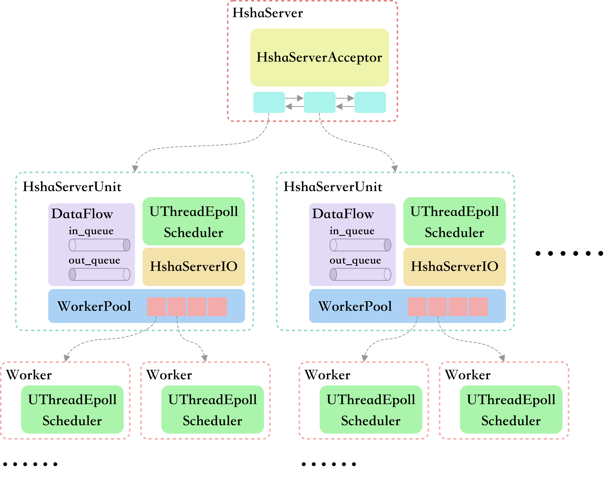
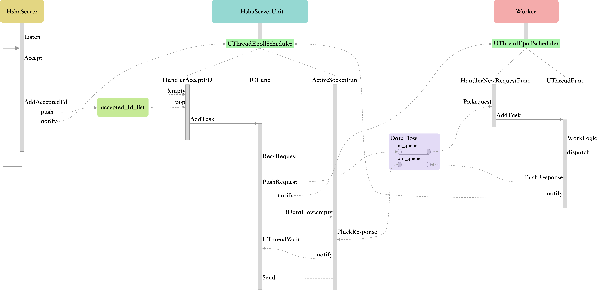

RPC框架
本文最后更新于 2024年5月13日 晚上
一、基础概念
RPC(Remote Procedure Call)即远程过程调用，允许一台计算机调用另一台计算机上的程序得到结果，而代码中不需要做额外的编程，就像在本地调用一样。- 所以可以把RPC看作是一种网络服务，网络传输函数调用信息，远端运行对应函数，然后再网络返回运行结果。这是一个很基本的运行模式，但是具体的实现方案却是多种多样的，但主要包含这些基本部分：
- 网络编程接口和协程。几乎所有的网络编程都会用多路复用，典型的就是使用
epoll；而解决这种基于事件的最好编程模式是使用协程，用顺序逻辑写异步处理代码。 - 服务器架构。作为
RPC服务器需要考虑如何设计出效率更高、吞吐量更高的服务器，这就是服务器机构设计的意义所在。经过多年的发展从最简单的多进程、多线程，到后来的多路复用异步编程，再到协程设计都是服务器架构设计的提升。 - 分发、动态代理。服务器的设计思路一般是每次被远程调用都运行一个相同的
dispatch函数，然后在分发函数的内部去根据调用方法执行不同的函数。比如用stub拿到对应的方法名和参数类型，通过反射的方式找到方法，然后调用相应的方法并将结果返回给stub。 - 网络协议。即客户端和服务端之间通信选用的协议，传输层是使用
TCP/UDP，然后在应用层可以选择HTTP等。 - 序列化。远程函数的调用的时候需要传输参数和运行结果，这里需要将代码中的结构体或者对象进行序列化和反序列化，有
protobuf这样的工具帮助生成代码。 - 服务注册。
二、PhxRPC
PhxRPC项目是一个完整的RPC框架，包括协程模块、服务器模块、网络协议模块、序列化模块等。- 协程是使用
boost::ucontext实现的，并且是无栈协程。如果想要创建新的协程需要在主协程中创建，不能在协程内创建新的协程。具体来说代码中通过一个AddTask函数创建协程，但这里只是将该协程加入到队列中，需要等到主协程的调度循环中取出这个协程并开始运行。这里和libco中的设计不太一样，libco是在创建协程之后立刻运行，但这就需要协程栈的支持了，必须要退回到上一级的协程。协程是一个非常大的话题，详细见协程库。 - 网络协议上使用的
HTTP，也属于比较常规的内容，但是注意HTTP的接口在实现时需要考虑是在协程上运行的，所以应该使用重新定义的网络读写接口。
2.1 基础框架

PhxRPC的服务器架构有核心三个角色，分别是HshaServer, HshaServerUnit, Worker，图中是用虚线框表示的，他们都运行在各自的线程中（即每个虚线框都表示一个线程）；存在UThreadEpollScheduler单元的线程即表示在这个线程中存在协程调度单元，这个线程是以协程的模式运行的。HshaServer主要用于监听新的TCP链接，HshaServerUnit处理所有RPC请求响应相关的网络读写，而下方的worker用于实际执行用户自定义的业务逻辑。
2.2 核心流程

2.2.1 HshaServer
HshaServer的职责是监听Socket端口，然后建立与客户端的连接，并将连接的fd传给HshaServerUnit进行后续处理。
处理流程
- 首先
HshaServer会在构造函数里就创建多个HshaServerUnit，用于在后台处理各种事件，创建的时候就会启动线程。使用链表的方式来管理所有的HshaServerUnit。 - 监听的工作是
HshaServerAcceptor完成的，处理流程是先建立并绑定socket端口，然后通过死循环的方式不断获得新到来的连接。 - 接着会从链表中选择一个
HshaServerUnit来处理这次请求，这里是可以考虑使用一些负载均衡策略的，PhxRPC的实现方式用了简单的轮询方案。 - 最后是调用选定的
HshaServerUnit的方法，将这个待处理的fd放入其内部的HshaServerIO的一个队列中，再通过调用该HshaServerUnit内部的UThreadEpollScheduler::NotifyEpoll方法唤醒线程进行处理。
线程唤醒问题
HshaSercer和HshaServerUnit其实运行在不同的线程中的，当我们在HshaServer流程中添加一个任务之后想要立刻唤醒HshaServerUnit所在的线程立刻处理，但因为HshaServerUnit运行在协程模式下，目前该线程极有可能在epoll_wait等待状态。- 所以需要一个机制将其从等待状态唤醒，
PhxRPC选择的是创建一个管道，然后将管道也加入到epoll中进行轮询，所以当另外的线程想要唤醒自己的时候，只需要向管道中写入新的数据就可以了。这便是NotifyEpoll的实现方案。
2.2.2 HshaServerUnit
HshaServerUnit是用来处理RPC的网络数据读写的，在承接到HshaServer传来的socket连接之后需要先读出请求信息，然后将请求通过DataFlow发送给Worker进行处理；等待Worker处理完成之后需要再从DataFlow中取出返回信息，并将返回的数据写入socket。- 可以发现
HshaServerUnit是一个中间层的角色，只汇总处理Socket IO的问题，并执行用户定义的函数。并且一个HshaServerUnit可以管理多个Worker，这以为着多个Worker在RPC的网络传输上都是汇总给一个线程来处理的。
处理流程
HshaServerIO::HandlerAcceptedFd函数是读取队列中缓存的socket连接，然后创建协程处理这个socket相关的网络数据读写，注册的函数是HshaServerIO::IOFunc。IOFunc的流程是先读数据，解析HTTP协议并生成request结构体；然后将其放入DataFlow中，并唤醒一个Worker来处理请求。- 在通过
WokerPool来唤醒Woker时，也是可以选择唤醒谁来处理的，可以有负载均衡的方案，但PhxRPC依然使用的轮询方案来处理。但不同的是，所有任务都被放在了DataFlow中，所有的worker对任务是一种竞争关系，不一定是唤醒的Worker拿到这个任务。这个和HshaServerUnit获取socket连接还不太一样，这个是直接写入了HshaServerUnit内部的队列，所以是不存在竞争关系的。 - 然后当前协程
IOFunc被挂起，等待任务处理完成之后恢复运行（具体是等ActiveSocketFunc唤醒准备好的协程），恢复之后将结果写入socket，任务就完成了。 HshaServerIO::ActiveSocketFunc是从DataFlow当中读取完成的response，这里面保存了socket信息以及协程ID，于是就可以通过协程ID恢复对应的协程了。
2.2.3 Worker
Worker::HandlerNewRequestFunc函数用于从DataFlow中读取数据，并生成对应的处理协程，注册函数Worker::UThreadFunc；这个函数内部就是调用用户自定义的处理函数，并且将response写入到DataFlow中，最好还需要唤醒HshaServerUnit。- 一开始看到
Worker是多线程实现的，在想为啥处理函数的也需要用协程来组织，毕竟处理函数一般都是消耗CPU来处理，并不存在阻塞浪费资源的情况。但是这是一个RPC服务器，我们在处理某个请求的时候是有可能需要通过网络去访问别的服务的，比如mysql, redis, rpc_server等，所以这里的设计也是用协程。
2.3 序列化工具:ProtoBuf
参考资料：
Protocol Buffers是一种语言无关、平台无关、可扩展的序列化结构数据的方法，它可用于（数据）通信协议、数据存储等。- 灵活，高效，自动化机制的结构数据序列化方法，可类比
XML，但是比XML更小（3 ~ 10倍）、更快（20 ~ 100倍）、更简单，json\xml都是基于文本格式，protobuf是二进制格式。
2.3.1 安装
官网下载项目源码：
https://github.com/protocolbuffers/protobuf.git下载依赖的第三方库项目：
git submodule update --init --recursive使用CMake编译安装，创建一个
build文件夹，然后执行命令cmake -DCMAKE_BUILD_TYPE=Release -Dprotobuf_BUILD_TESTS=OFF -DABSL_PROPAGATE_CXX_STD=ON ..接着通过make编译并安装项目即可
make & sudo make install安装操作将会把三种文件放置到三个地方，分别是：
- 生成代码的可执行文件放在
/usr/local/bin - 生成代码需要引用的头文件在
/usr/local/include - 编译链接的
-lprotobuf库文件放置在/usr/local/lib
- 生成代码的可执行文件放在
2.3.2 消息定义
- 首先所有数据结构的定义都放在单独的
.proto文件中，结构定义规则如下：
1 | |
- 此外可以在
.proto文件中通过定义package xxx来设置生成的代码的namespace - 下面定义了
protobuf的格式与C++类型的对应表
| .protoType | Notes | C++Type |
|---|---|---|
| double | double | |
| float | float | |
| int32 | 使用变长编码，对于负值的效率很低，如果你的域有可能有负值，请使用sint64替代 | int32 |
| uint32 | 使用变长编码 | uint32 |
| uint64 | 使用变长编码 | uint64 |
| sint32 | 使用变长编码，这些编码在负值时比int32高效的多 | int32 |
| sint64 | 使用变长编码，有符号的整型值。编码时比通常的int64高效。 | int64 |
| fixed32 | 总是4个字节，如果数值总是比总是比228大的话，这个类型会比uint32高效。 | uint32 |
| fixed64 | 总是8个字节，如果数值总是比总是比256大的话，这个类型会比uint64高效。 | uint64 |
| sfixed32 | 总是4个字节 | int32 |
| sfixed64 | 总是8个字节 | int64 |
| bool | bool | |
| string | 一个字符串必须是UTF-8编码或者7-bit ASCII编码的文本。 | string |
| bytes | 可能包含任意顺序的字节数据。 | string |
- 其他复合类型的定义方式：
1 | |
- 还有一种是消息嵌套的定义方式，可以引用别的消息结构用于定义自己。也可以直接嵌套定义在自己内部
1 | |
2.3.3 代码生成
- 这一步就是按照我们的定义规则生成对应的代码，以便项目使用，通过
protoc程序完成代码生成
1 | |
- 编译完成之后会生成
xxx.pb.h，xxx.pb.cpp两个文件，项目中通过引入这些生成的源文件来对数据进行序列化和反序列化。
2.3.4 库函数使用
- 关于用户自定义消息的各种操作是通过protobuf库函数对外提供支持的，比如封装数据流读取到对象，将对象输出到流、字符串等。
1 | |
RPC框架
https://lluvialuo.github.io/2024/05/13/RPC框架/